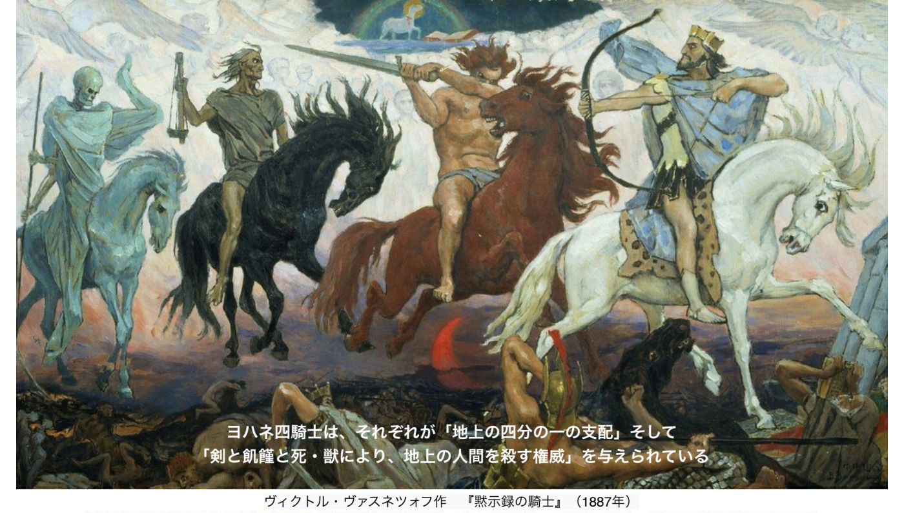
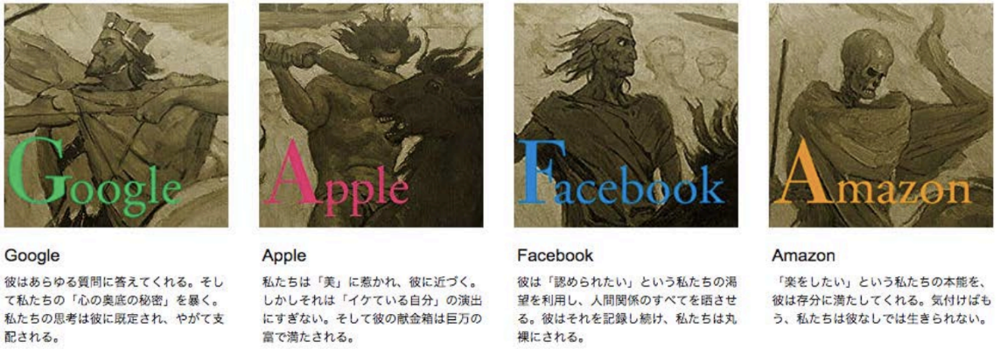

-
Google
Amazon
Facebook
Apple -
導入
今回はスコット・ギャロウェイ（世界最高のビジネススクール教授50人の一人。ニューヨーク大学スターン経営大学院教授であり、起業家、ニューヨーク・タイムズ取締役なども歴任）の著書『the four GAFA 四騎士が創り変えた世界』をもとにお話をしていきたいと思います。
本書では、Google、Amazon、Facebook、Apple（GAFA）の4つの企業を「ヨハネの黙示録」の四騎士になぞらえています。 四騎士とは、それぞれが「地上の四分の一の支配」そして「剣と飢饉と死・獣により、地上の人間を殺す権威」を与えられているとされるもので、その支配力についての本です。
また、この話は前回のOPNの『Age Of』で触れた貧富差が拡大して中産階級が崩壊し、共和党を支持せざるを得ない今の米国の人たちの話の続きでもあります。
GAFAにIT企業の老舗であるMicrosoftを加えた5社の株式時価総額は、4兆1579億ドル（約461兆円）にも達しています（2018年8月）。 日本の2017年の名目GDPが4兆8721億ドル（約541兆円）ですので、この5社だけで世界第3位の経済大国である日本の85％の経済規模で、第4位のドイツをも上回っています。圧倒的規模感です。 ここまで世界の経済構造を変えてしまったGAFAとは何か？そして、その後待ち受ける世界とは？では、はじめてみたいと思います。
-
 
GAFA.pdf